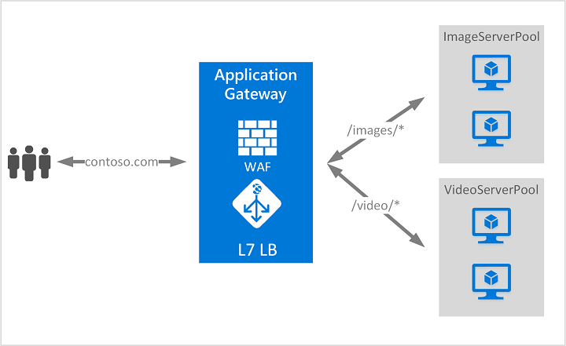

VMs
- Both Windows and Linux supported.
- Windows works on RDP (port 3389), can be imported in Remmina.
- For graphics, use True Color (32bpp)
- Can be used to create:
- Web Servers : using IIS
- Email Servers
- Database Servers.
- (Udacity only) : While selecting image, select Windows Server 2019 Datacenter Gen1 only.
High Availability
Availability within same region:
VM Scale Sets
- Service that combines group of VMs to be run as a single unit.
- Uses load balancing and/ or auto scaling to keep applications/ data in the VM and ensure high availability.
- Accessible after increased resource usage.
- Maintains High Availability and Application Resiliency.
- Application can auto scale using as resource usage changes.
- Not necessary to be on the same Azure Zone.
Availability Set
- Places VMs into different multiple isolated physical machines within the same datacentre.
- Uses:
- Fault Domains:
- Used in cases where one VM fails to start due to some fault.
- It is a rack of servers consuming subsystems, such as power and networks.
- Update Domains:
- Used in cases where one VM fails to start due to updates happening.
- A grouping of all VMs that will update and reboot together.
- Does not help if entire datacentre goes down.
- SLA: 99.5%
Availability Zones
- Instead of having all VMs in the same datacentre, VMs are logically placed into different physical devices across different datacentres within the same region.
- Intentionally placed within the same region to reduce latency.
- SLA: 99.95%
Availability across different regions : Load Balancers
Application Gateway
- If you want to load balance between your servers in a region at the application layer, use Application Gateway.
- Works at Application Layer (L7).
- Performs URL Based routing.
Front Door
- If you need to optimize global routing of your web traffic and optimize top-tier end-user performance and reliability through quick global failover, use Front Door.
- Uses Microsoft’s global edge network.
- Works at Application Layer (L7).
- Performs TCP encryption and decryption, so work less on Web Server.
Note: L7 Load Balancer:

Azure Load Balancer
- To do network layer load balancing, use Load Balancer.
- Network Layer (L4) load balancer.
- Uses health probes to monitor load-balanced resources.
Traffic Manager
- DNS Based Load Balancer.
- Distribute traffic across global azure region.
- Checks DNS of incoming traffic and routes to nearest region datacentre.
Application Services
HTTP Service in Azure for hosting REST APIs, Web and Mobile Applications.
- Only deploy the app, no need for server maintenance.
- Global scale with High Availability.
- Serverless Code (not dependent on the server).
- Deploy application templates (DNN, Joomla, Wordpress).
- Security and Compliance.
- Managed Production Environment (You don’t have to worry about maintenance of server).
- Supports multiple languages and frameworks.
SLAs
- App Service (99.95%)
- Cloud Services (99.5%) 2 or more availability sets
- VMs (99.9%)
- Azure Active Directory: 99.9%
Cloud Design Patterns
- Design for self healing.: Script that restores original state.
- Design for self redundancy.: Load balancing
- Design to scale out.: VM Sets, etc.
- Design for evolution.: Design such that application can bhi upgraded without downtime
- Design for operations.
- Managed Services. : App Service.
- Focus on business needs: Due to 6
Cloud Design Patterns
- Big Computer: 3D rendering, stuff that require more compute power.
- Big Data: Data Analytics at scale
- Event driven architecture: IoT
- Microservices: Splitting multiple independent components
- N-tier application : Presentation, Business, DB layer
Design a Network Solution in Azure
Factors to Consider
- Latency
- Security
- Speed
- Redundancy for Network
Tools
- VNET/ VNET Peer: Connect different services within Azure
- Gateway : Control communication to and from on-site to Azure through VPN or ExpressRouter
- VPN : Allow communication to and from on-site to Azure
- Network Watcher : Troubleshoot potential issues with network
Methods to communicate between Azure resources
- Using Virtual Network.
- Virtual Network endpoint
- VNET Peering
- Private link.
Communication with on-premises
- Point-to-site VPN
- A Point-to-Site (P2S) VPN gateway connection lets you create a secure connection to your virtual network from an individual client computer.
- A P2S connection is established by starting it from the client computer.
- This solution is useful for telecommuters who want to connect to Azure VNets from a remote location, such as from home or a conference.
- P2S VPN is also a useful solution to use instead of S2S VPN when you have only a few clients that need to connect to a VNet.
- Uses following protocols:
- OpenVPN
- SSTP
- IKEv2 VPN
- Site-to-Site
- Azure ExpressRoute
- Layer 3 connectivity between your on-premises network and the Microsoft Cloud through a connectivity provider. Connectivity can be from an any-to-any (IPVPN) network, a point-to-point Ethernet connection, or through a virtual cross-connection via an Ethernet exchange.
- Connectivity to Microsoft cloud services across all regions in the geopolitical region.
- Global connectivity to Microsoft services across all regions with the ExpressRoute premium add-on.
- Dynamic routing between your network and Microsoft via BGP.
- Built-in redundancy in every peering location for higher reliability.
- Connection uptime SLA.
- QoS support for Skype for Business.
Policy vs Route based VPNs
- Policy based VPN
- Uses a combination of prefixes from both networks to determine how traffic is encrypted/ decrypted through IP tunnels.
- Allows for multiple VPNs via single VNET gateway.
- Does not support VPN diagnostics in Azure.
- Route based VPN
- Use any-to-any traffic selectors and routing/ forwarding tables to redirect traffic through different IPSec tunnels.
- If your devices support it, this is the better Policy Based.
- Can perform VPN diagnostics in Azure.
Fault Tolerant Configurations
- Active/ Standby: If any planned/ unplanned maintenance on Active, Standby will automatically failover for VNet - VNet connection.
- Active/ Active: Both instances of VPN tunnels will be established. If any planned/ unplanned maintenance on 1 Active, 2nd active will be used in its place.
- ExpressRoute failover: If there is loss of network in ExpressRoute site to site, then automatically failover to IPSec tunnel.
- Zone redundant gateway: Deploy network gateway across multiple zones.
Network Security Group
- Basic cloud based firewall.
- Securing traffic.
- A network security group contains security rules that allow or deny inbound network traffic to, or outbound network traffic from, several types of Azure resources.
- Also, secure your storage account.